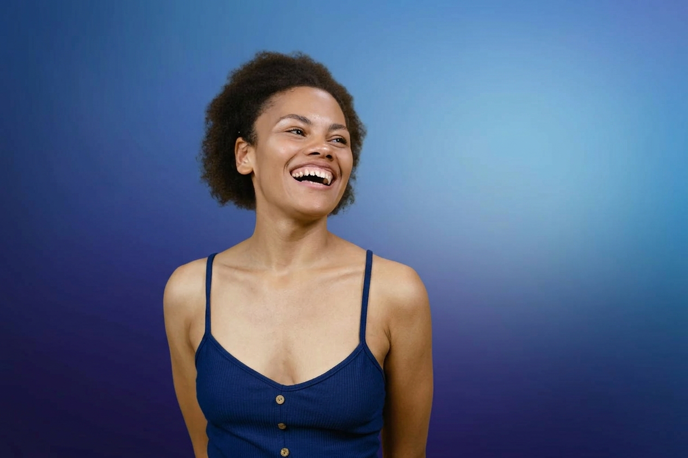

India Smith
UX Designer
I craft intuitive digital experiences through user research, thoughtful design, and a passion for solving problems collaboratively.
Read more
I craft intuitive digital experiences through user research, thoughtful design, and a passion for solving problems collaboratively.
Read more